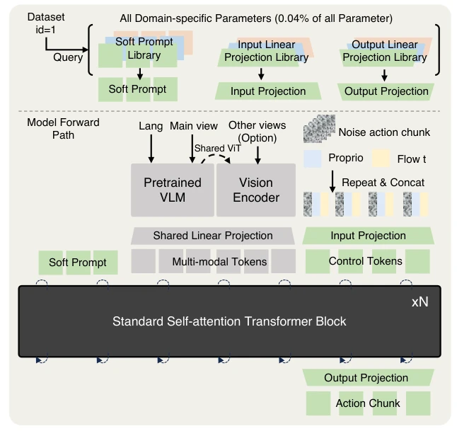
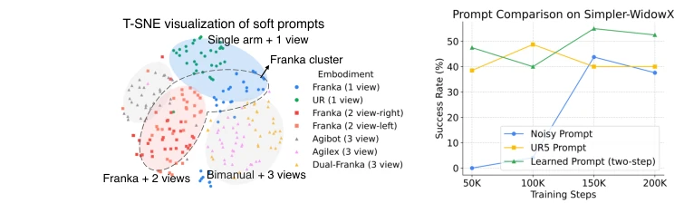
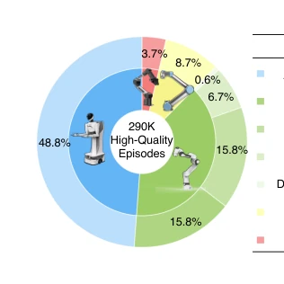
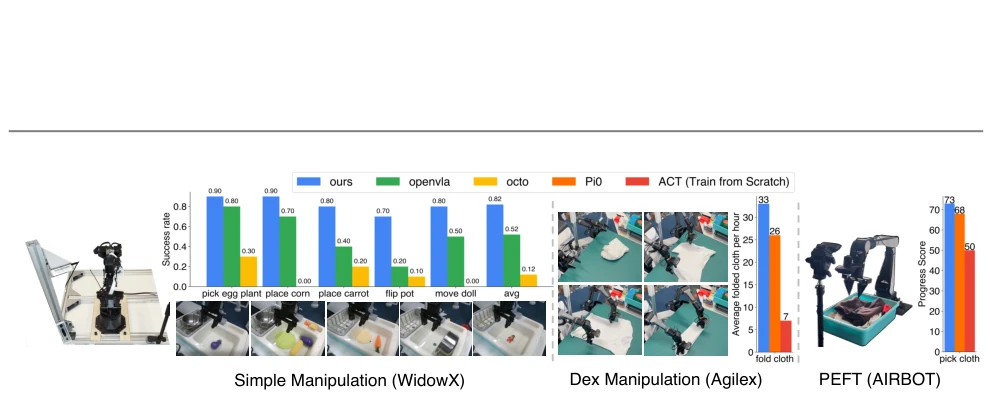
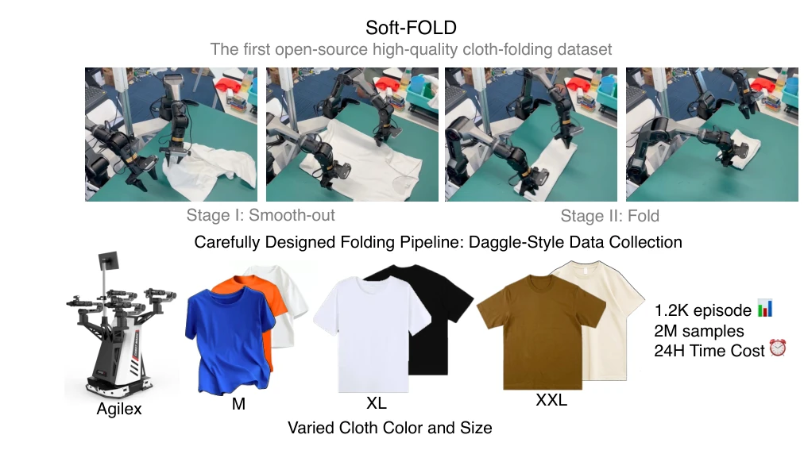

Figure 1 | X-VLA employs distinctive learnable embeddings, referred to as soft prompt, to effectively address the heterogeneity present in cross-embodiment datasets. This approach, combined with stacking simple self-attention transformer blocks, provides a scalable solution for integrating diverse pretraining datasets and finetuning for a variety of domain-specific applications. Evaluated across 6 simulation benchmark including one autonomous driving bench and 3 real-world robots, X-VLA achieves SOTA performance over most benchmark suites and real-world robotic tasks.

Figure 10 | Illustration of the detailed architecture of our model. Most parameters are shared across different embodiments, with the exception of the soft prompt and input/output linear projections for action-related tokens. These unshared parameters account for only a small fraction of the total parameters (0.04%). For each dataset, the corresponding domain-specific parameters are queried. The image inputs and language instructions are processed by pretrained Vision-Language Models (VLMs). Notably, only the main view is passed through the entire VLM, while additional views, such as the wrist view, are directed only to the vision encoder. This approach helps preserve the pretrained VLM’s capability, as current VLMs have limited multi-view perception. The proprioception and flow-matching t
Figure 5 | With increased compute, data diversity, and data volume, X-VLA can output reduced validation prediction error, which can lead to enhanced adaptation performance as discussed by Tab. 1.

Figure 8 | T-SNE visualization of soft prompts on 7 data sources. Figure 9 | Comparison of different prompts on PEFT.
其他图片Other Figures

Figure 3 | The recipe for mixed data used in pretraining experiments.

Figure 7 | Real-World Evaluation Results. We evaluate our X-VLA model on three distinct real-world embodiments, each under specific task setups, including simple manipulation, dexterous manipulation, and fast adaptation experiments using PEFT techniques. See Appendix J for for details

Figure 11 | The illustration of our proposed Soft-Fold datasets.